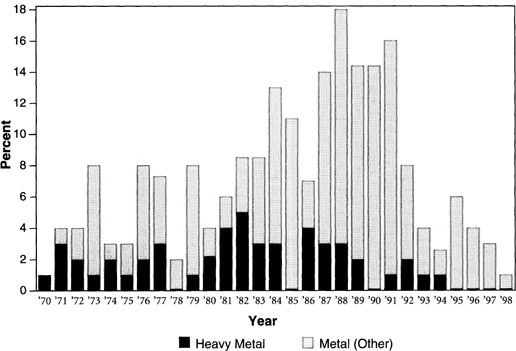

Albums designated “Heavy Metal” have been universally classified as heavy metal, including those by Black Sabbath, Judas Priest, and Iron Maiden. Those in the residual category, “Metal (Other),” include bands called “hard rock” in the ’70s and relabeled “metal” in the ’80s, like Kiss, lite-metal bands like Poison and Bon Jovi, and the post-thrash metal releases of Metallica in the ’90s.